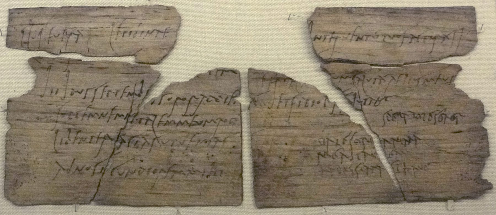
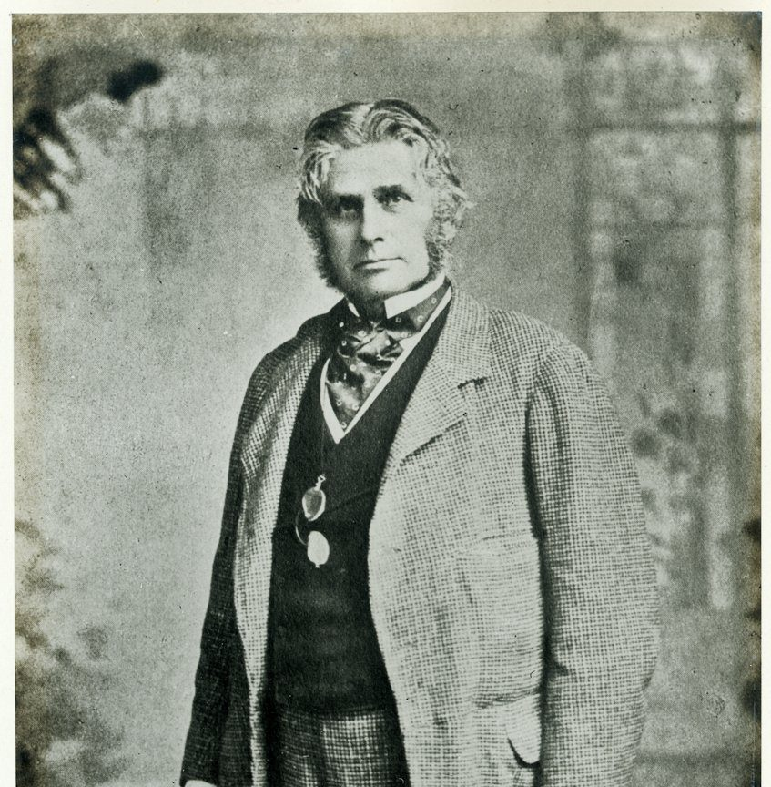
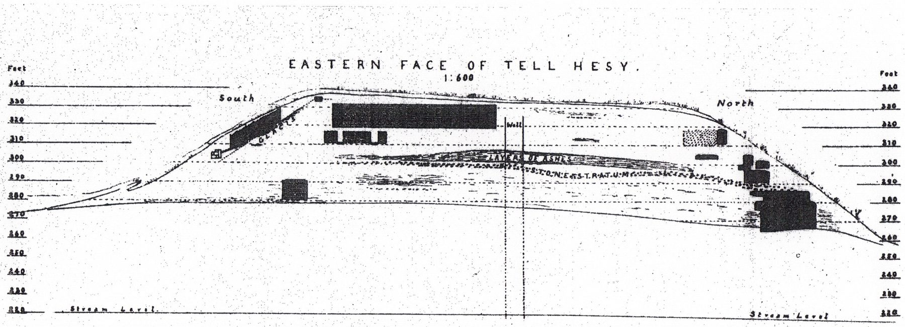
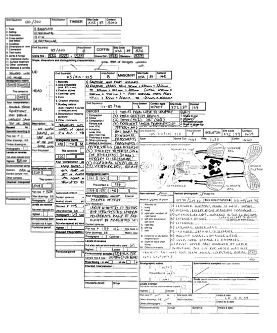
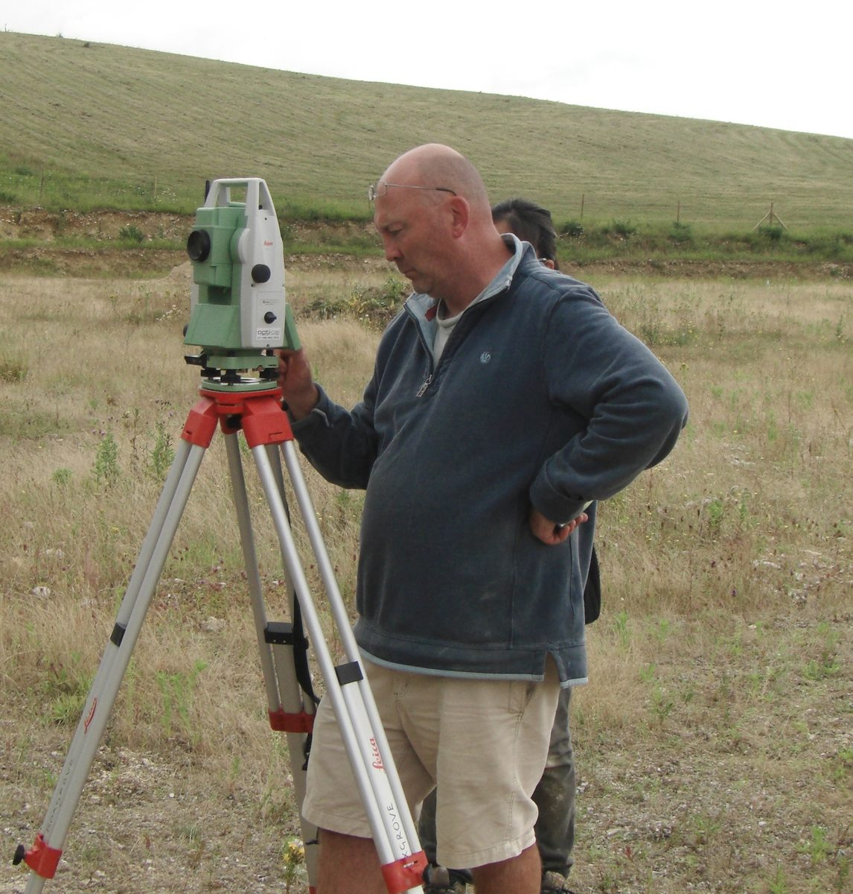
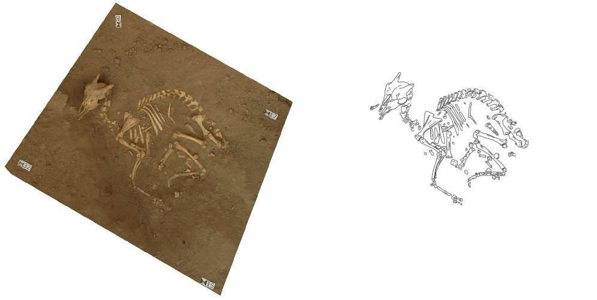

Unit 1 · The investigation of ancient sites and sources · Lesson 2
Digging the past I: from treasure hunting to scientific excavation
How and why did digging up the past change from a hunt for treasure into a careful science?
Year 11 Ancient History · Present with → or space · Read on a phone with R

Connect · 3 minutes · everyone writes one line in 60 seconds · press K for the timer
What turns a source into evidence?

‘What turns a source into evidence? Use the Vindolanda tablet.’
A source becomes evidence when a historian uses it to answer a particular question: for “What does the tablet suggest about whether women on the frontier could write?”, the last lines, in Claudia Severa’s own hand, are the evidence.
Today: how do sources come out of the ground — and what is lost for ever if they are dug up badly?
Images: Fæ (CC BY-SA 3.0). Full details on the last slide.
Learning intentions and success criteria · 2 minutes
Today’s goals
- understand how and why archaeological excavation and recording have changed
- use stratigraphy to work out the order of layers and date finds
- explain two ways excavation changed between the 1870s and today
- use the law of superposition to put layers in order
- explain why recording matters when excavation destroys a site
Syllabus outcomes: AH-11-05 analyses different types of sources for evidence to support a historical account or argument · AH-11-06 explains differing interpretations and representations of the past · AH-11-07 communicates historical understanding, applying historical knowledge, terms and concepts. Life Skills: AH-LS-08 uses sources to form conclusions about the past · AH-LS-11 communicates information about the past using historical terms and concepts.
Note-making · the routine for the whole course
How to structure your notes
questions and key terms, written after
short phrases, arrows (→ leads to), abbreviations (c. = about; CE = Common Era)
- 1Rule up the page firstA cue column about a quarter of the page wide; title and date at the top; room for a summary at the bottom.
- 2Listen and look, then writeDon’t copy while a slide is being explained. Phrases, not sentences.
- 3Write your own notes at each ✎ checkpointThen compare with the model notes, one row at a time. Add what you missed in a second colour.
- 4Write the cue questions afterwardsUse exam verbs: explain, analyse, assess. To revise, cover your notes and answer the cues.
- 5Finish with a three-sentence summaryTwo checkpoints today: how excavation changed · reading the layers.
Key vocabulary · add to the unit word wall
Words for digging and dating
| Reading a site | Meaning |
|---|---|
| context (archaeological) | The exact place and layer an object was found in, and what was found with it. |
| stratigraphy | The study of the layers (strata) built up on a site over time. |
| law of superposition | In undisturbed layers, the lower layers are older than the layers above them. |
| terminus post quem | ‘The date after which’: a coin or object gives the earliest possible date for the layer it is found in. |
| section | A drawing or photograph of the side of a trench, showing the layers. |
| Digging and recording | Meaning |
|---|---|
| baulk | A strip of earth left standing between excavated squares, so that its sides show the layers. |
| Harris matrix | A diagram showing the order of every layer and feature on a site, latest at the top. |
| context sheet | A standard form filled in for every context (each layer or feature) as it is dug. |
| total station | An electronic surveying instrument that records the exact position and height of finds and features. |
| photogrammetry | Measuring from photographs: many overlapping photos are combined into an accurate 3D model. |
1 · Treasure hunting · I do — illustrated mini-lecture
Schliemann at Hisarlik, 1871–1873: dig straight to the bottom
- Who: Heinrich Schliemann, a rich German businessman who paid for his own digs
- Where: Hisarlik, a mound in north-west Türkiye that he believed was Homer’s Troy
- How: his workers cut a huge trench right through the mound to reach the bottom
It is above all things necessary for me to reach the primary soil, in order to make accurate investigations.
Report of 5 April 1872 · Heinrich Schliemann, Troy and its Remains, trans. L. Dora Schmitz (London: John Murray, 1875), p. 99
… I see this very ancient building (which may have been erected 1000 years before Christ) standing as it were in mid air. To my regret, however, it must in any case be pulled down, to allow us to dig still deeper.
Report of 23 May 1872 · the same book, p. 133 · “primary soil” = the natural ground at the bottom
What did the trench destroy, and why does that matter?
The layers above the city he wanted: houses and walls of later settlements. Dug away without a full record, their order and contents are lost for ever, so no one can check his conclusions or ask them new questions.
1 · Treasure hunting · I do — think aloud · use the R question from the OVPRL routine on page 2 of your booklet
‘Priam’s Treasure’, 1873: what he found, what he lost
While the men were eating and resting, I cut out the Treasure with a large knife … It would, however, have been impossible for me to have removed the Treasure without the help of my dear wife, who stood by me ready to pack the things which I cut out in her shawl and to carry them away.
Heinrich Schliemann, Troy and its Remains, trans. L. Dora Schmitz (London: John Murray, 1875), pp. 323–324
- 1What he foundGold, silver and copper objects (jewellery, vessels and a copper shield), which he named after Priam, Homer’s king of Troy.
- 2What his method lostHe cut the objects out in a hurry, with no exact record of how they lay. Some historians later argued they were put together from several finds; others disagree. Without a record, no one can be sure.
- 3Why it was too old for Homer’s TroyIt came from a deep, early layer (Troy II, about 2550–2300 BCE). The treasures date to about 2400 BCE: more than 1,000 years before the supposed Trojan War.
Schliemann later admitted that Sophia was not there: she was in Athens for her father’s funeral. His report is good evidence of what he wanted readers to believe, but weaker evidence of exactly how the find was made.
2 · Towards scientific method · I do
By the 1880s: record everything, and where it came from

Augustus Pitt Rivers
- Where: Cranborne Chase, southern England, 1880s–1890s
- What changed: recorded every find and exactly where it lay, with plans, sections and models, and published it all
Excavators, as a rule, record only those things which appear to them important at the time, but fresh problems in Archæology and Anthropology are constantly arising … Every detail should, therefore, be recorded …
A. Pitt Rivers, Excavations in Cranborne Chase, vol. I (1887), Preface, p. xvii

Flinders Petrie
- Where: Egypt, and in 1890 Tell el-Hesy, a mound in southern Palestine
- What changed: kept and studied even broken pottery, drew the mound’s layers (above) and used the pottery in each layer to date it
With the brief view of Palestinian pottery gained in a few weeks, on one site at Tell Hesy (Lachish), I found it possible to ride over mounds of ruins and see the age of them without even dismounting.
W. M. Flinders Petrie, Methods and Aims in Archaeology (London, 1904), p. 17 · “Lachish” was Petrie’s identification of the site, no longer accepted
But pioneers are judged differently. Wheeler (1954) praised Pitt Rivers, but wrote of Petrie: “The almost complete absence of measured sections from Petrie’s reports is the inevitable corollary of his ‘method’.” The Tell el-Hesy section above is one of the few exceptions.
Images: unknown photographer (Public domain) · Petrie 1891 (Public domain). Full details on the last slide.
2 · Towards scientific method · I do
Mortimer Wheeler’s box grid: squares and baulks
A series of squares, a grid, dug so that a balk is left between each pair of adjacent squares until the extreme end of the work … the supervisor retains in each square (until the end of the work) a complete section on all four sides of him …
Mortimer Wheeler, Archaeology from the Earth (Oxford: Clarendon Press, 1954), p. 64 · he first dug this way at Maiden Castle, England, in 1936, and later on his digs in India (for example at Arikamedu, 1945)
Why leave the baulks standing?
Answer: so the layers can be seen and drawn on all four sides of every square, and every find can be tied to its square and its layer.
2 · Towards scientific method · I do
1973: the Harris matrix puts every layer in order
- Who and when: the archaeologist Edward Harris invented it in 1973
- What: a diagram of the order of every layer and feature on a site, latest at the top
- Why: real sites are not a neat layer cake. Pits are dug down into older layers and walls are built on them, so “lower = older” is not enough on its own.
Which came first: the wall (2) or the pit (3 and 4)?
Answer: we can’t tell — they never touch. The matrix shows them as two branches: it records what we know, and what we don’t.
2 · Towards scientific method · I do
Today: a record of every layer, in three dimensions



‘A discovery dates only from the time of the record of it, and not from the time of its being found in the soil.’ This classic sentence of Pitt Rivers proclaims fairly and squarely the ultimate moral and scientific duty of the field-archaeologist.
Mortimer Wheeler, Archaeology from the Earth (1954), p. 182, quoting Pitt Rivers
Images: Mididoctors (Public domain) · Midnightblueowl (CC BY-SA 3.0) · Luca Bezzi (CC BY 4.0). Full details on the last slide.
Notes checkpoint 1 of 2
How excavation changed
3 · Reading the layers · We do — the ‘layer cake’ · cold call
Put the layers in order: the law of superposition
In undisturbed layers, the lower layers are older than the layers above them.
Which layer is oldest? Which is youngest?
Answer: Layer 6 is the oldest, Layer 1 the youngest: deeper means older.
Put all six in order, oldest first.
Answer: 6 → 5 → 4 → 3 → 2 → 1
Tell the site’s story, oldest first. What do the layers suggest?
Suggests: people left broken pottery (5) → an earth floor was laid (4) → there was a fire (3) → a building probably fell down (2) → soil and grass grew over it (1).
Extension: an ‘unstratified’ site has no clear, undisturbed layers, so its finds cannot be put in order or dated by the layer they came from.
3 · Reading the layers · We do — dating with a coin · cold call
A coin dates a layer: terminus post quem
‘The date after which’: a coin or object gives the earliest possible date for the layer it is found in.
When was Layer 4 formed?
Answer: in or after 120 CE. The coin had to exist before it was dropped, and it may have been lost years later.
What does the coin tell us about Layer 3, the burnt layer above it?
Answer: Layer 3 formed after Layer 4, so the fire happened in or after 120 CE too (and so did Layers 2 and 1).
What does it tell us about Layers 5 and 6, below it?
Answer: nothing about their date. They are older than Layer 4, but the coin cannot tell us how much older.
The broken pottery in Layer 5 can date it only if we know when that style was made: that is typology, next lesson.
Notes checkpoint 2 of 2
Reading the layers
Check for understanding · hinge question · hold up your A, B, C or D card on “3, 2, 1, show”
A new site. A coin minted in 64 CE is found in undisturbed Layer 3. What can we say about Layer 3?
- AIt was formed in 64 CE
- BIt was formed in or after 64 CE
- CIt was formed before 64 CE
- DIt dates from the reign of the emperor on the coin
A confuses when the coin was made with when it was dropped. C is backwards: in an undisturbed layer, the coin had to exist before it could be buried. D forgets that a coin can stay in use, or be kept, long after it was made.
4 · What changed? · You do · 6 minutes · press K for the timer
Put the six methods in order. What changed, and what stayed the same?
1 · Put the cards in order, oldest first. 2 · For each step, one sentence: “What changed was … ; what stayed the same was …”
Use your Notes 1 rows. Foundation cards have the dates printed.
| Card | When | What changed / what stayed the same (examples) |
|---|---|---|
| B · Schliemann | 1871–1873 (trial dig 1870) | treasure hunting: dig to the target, later layers destroyed |
| E · Pitt Rivers | 1880s–1890s | changed: every detail and find position recorded · same: digging by hand |
| D · Petrie | 1890 | changed: layers drawn and dated by pottery · same: paid gangs of diggers and (Wheeler complained) few measured sections |
| F · Wheeler | 1930s–1950s | changed: a grid, sections on four sides · same: superposition, careful recording |
| C · Harris | 1973 | changed: the order of every context in one diagram · same: superposition underneath it |
| A · Digital | today | changed: exact positions and 3D models · same: excavation still destroys, so the record is all that remains |
4 · What changed? · Writing focus · 4 minutes · I do → We do → apply it in the short answer
Writing focus: what does the question ask you to do?
Worked example · written for this lesson
Explain how a coin can date the layer [it is found in].
- 1Verb: explainNESA: “Relate cause and effect. Make the relationships between things evident. Provide why and/or how.” Here: how.
- 2Topic: how a coin dates a layerthe dating, not what the coin looks like
- 3Limits: one coin, one undisturbed layerthe layer it lies in, and nothing else
- 4Do: an explanationopen with the answer; then the steps in order, each with what it means for the date (which means that …)
Describe is different. NESA: “Provide characteristics and features.” A description says what the coin looks like; an explanation says how it dates the layer.
NESA, Glossary of key words. Step 4 is our department’s advice.
Annotate today’s short-answer question yourself (verb · topic · limits · do), then write your opening sentence: it must say how excavation changed. Your Writing toolkit (booklet pages 3–4): the directive verbs.
A second question: Explain how archaeologists use superposition to put layers in order. Which opening sentence explains?
- AArchaeologists dig down through layers of soil that hold coins, pottery and a burnt layer.
- BArchaeologists order layers by superposition: in undisturbed layers, the lower ones are older.
- CArchaeologists use superposition, stratigraphy, the Harris matrix and terminus post quem on layers.
- DArchaeologists find superposition a very important and useful idea for ordering layers.
It names the rule and how it orders the layers, so the rest of the answer can explain each step. A describes the layers. C lists methods. D gives an opinion, not how.
4 · What changed? · You do · 12 minutes · press K for the timer
Short answer: explain how excavation has changed since the 1870s
Explain how archaeological excavation has changed since the 1870s.
- deconstruct the question, then open with how excavation changed
- use two named examples
- use time connectives: initially, by the 1880s, today
- say one thing that has stayed the same
Deconstructed: verb explain, here how · topic: how excavation changed · limits: since the 1870s, to today · do: open with how it changed, then each stage with a named example and its effect, and one thing that stayed the same.
Start: “Before …, archaeologists … ; today, …” Use your timeline sentences and Notes 1.
Was Schliemann a pioneer or a destroyer? Write a two-sided judgement that shows the interpretation is contested.
Initially, excavation was often a hunt for treasure: in the 1870s Heinrich Schliemann cut a huge trench through the mound at Hisarlik to reach the city he believed was Homer’s Troy, destroying the later layers above it. He also misread his layers: ‘Priam’s Treasure’, which he linked to Homer’s king, came from a settlement more than 1,000 years older than the supposed Trojan War. By the 1880s, Augustus Pitt Rivers was recording every detail of his excavations at Cranborne Chase, including where each find lay, because new questions in archaeology keep arising. In the twentieth century, Mortimer Wheeler’s box grid and, from 1973, the Harris matrix gave archaeologists ways to record the order of every layer. Today, context sheets record every layer, while total stations and photogrammetry record positions and shapes in three dimensions. What has stayed the same is the principle of stratigraphy and the fact that excavation destroys what it uncovers, so the record is all that remains.
Check · 5 minutes · cold call, then your short answers
Why does recording matter when excavation destroys a site?
Why does recording matter? Use the word “destroys” and one example from today.
Be ready to read your best sentence aloud. Which time connective did you use?
Excavation removes each layer as it is dug, so a site can be dug only once. Unless every layer, find and position is recorded, that evidence is lost for ever and no one can check or reinterpret it — as at Schliemann’s Hisarlik. The record is all that remains.
… the archaeologist is digging up, not things, but people.
Mortimer Wheeler, Archaeology from the Earth (1954), Preface · Lesson 1’s key quotation, revisited: the record of where things lay is how we find the people
Then check yourself against today’s three “I can” statements. Next lesson: surveying, dating and scientific analysis.
Finish your notes If time · or at home
Summary: three sentences
- How has excavation changed since Schliemann?
- How does stratigraphy help archaeologists date layers and finds?
- Why does recording matter?
Excavation has changed from treasure hunting, such as Schliemann’s trench at Hisarlik in the 1870s, to a careful science in which every layer and find is recorded, from Pitt Rivers in the 1880s to the digital tools used today. Stratigraphy lets archaeologists put layers in order, because in undisturbed layers the lower ones are older, and a coin or other datable object gives the earliest possible date for its layer and the layers above. Recording matters because excavation destroys what it uncovers, so the record is all that remains of a site, and it is what lets archaeologists find “not things, but people”.
Practice and review · 1 of 3 · true, false, justify
True or false? Justify your answer
- 1Schliemann’s trench destroyed many of the later layers at Hisarlik. True — he dug through them to reach the city he was looking for, and they cannot be dug again.
- 2‘Priam’s Treasure’ came from the city of the Trojan War. False — it came from Troy II; the treasures date to about 2400 BCE, more than 1,000 years before the supposed war.
- 3In undisturbed layers, a lower layer is older than the layers above it. True — the law of superposition.
- 4A coin minted in 120 CE proves that the undisturbed layer it lies in was formed in 120 CE. False — it shows only that the layer formed in or after 120 CE (terminus post quem).
- 5Wheeler left baulks between his squares so that the layers could be seen in section. True — each square kept a section on all four sides.
- 6Digital recording means excavation no longer destroys a site. False — digging still removes the layers; the record, paper or digital, is all that remains.
Practice and review · 2 of 3 · writing
Write it as a historian
Explain terminus post quem, using a different example from the one in class.
Terminus post quem means “the date after which”: if a pot of a type first made in 200 CE is found in a pit that no later digging has disturbed, the pit cannot have been filled before 200 CE, although it could have been filled much later.
Draw your own section of four layers with one find in each, and explain which find is oldest and why.
Rewrite this describing sentence so that it explains, using which meant that: “In the 1870s, Schliemann dug a huge trench through the mound at Hisarlik.”
In the 1870s, Schliemann cut a huge trench through the mound at Hisarlik to reach the city he believed was Homer’s Troy, which meant that the later layers above it were destroyed.
Was Schliemann a pioneer or a destroyer? Write a two-sided judgement that shows the interpretation is contested.
Schliemann can be seen as a pioneer, because his digging at Hisarlik in the 1870s showed that the mound held the ruins of several cities built one on top of another. However, he can also be seen as a destroyer: his workers cut a huge trench that destroyed much of the evidence for Troy’s later settlements, and he cut out ‘Priam’s Treasure’ without recording exactly how it lay, so historians still argue about whether it was a single find. His own reports are not reliable on this, since he later admitted that his wife was not there. On balance, he is best judged a pioneer whose methods destroyed much of what he found: he published his results within a year, but by the later standard that Pitt Rivers set out in 1887, that every detail should be recorded, he fell short. Historians who stress his discoveries call him a pioneer, and those who stress what his trench destroyed call him a destroyer, so the interpretation remains contested.
Practice and review · 3 of 3 · cover your notes and answer from memory
Quick checks
- Explain how Schliemann dug Hisarlik, and what it cost. He cut a huge trench through the mound to reach the bottom, destroying the later layers; he cut out ‘Priam’s Treasure’ with no record of how the pieces lay.
- Why was ‘Priam’s Treasure’ too old for Homer’s Troy? It came from Troy II; the treasures date to about 2400 BCE, more than 1,000 years before the supposed Trojan War.
- What did Pitt Rivers change? He recorded every detail, including exactly where each find lay, because new questions in archaeology keep arising.
- Why did Wheeler leave baulks? So every square kept a section on all four sides, showing the layers, and each find could be tied to its square and layer.
- What is the law of superposition? In undisturbed layers, the lower layers are older than the layers above them.
- A coin minted in 64 CE is found in an undisturbed layer. What can we say? The layer was formed in or after 64 CE (terminus post quem), and so were the layers above it.
- Why does recording matter? Excavation destroys what it uncovers, so the record is all that remains of a site.
Sources and credits
Where everything comes from
Heinrich Schliemann, Troy and its Remains, ed. Philip Smith, trans. L. Dora Schmitz (London: John Murray, 1875), pp. 99, 133, 323–324 (public domain); checked against the 1875 edition and the Project Gutenberg text.
A. Pitt Rivers, Excavations in Cranborne Chase, vol. I (1887), Preface, p. xvii (public domain); checked against the 1887 edition.
W. M. Flinders Petrie, Methods and Aims in Archaeology (London, 1904), p. 17 (public domain); checked against the 1904 edition.
Mortimer Wheeler, Archaeology from the Earth (Oxford: Clarendon Press, 1954), pp. 15, 63, 64, 182, and the Preface; checked against the 1954 edition.
Facts: Archaeology magazine, “Troy II” · Staatliche Museen zu Berlin · Heinrich-Schliemann-Museum Ankershagen · D. A. Traill, Antiquity 57 (1983) · D. F. Easton, ‘Priam’s Treasure’, Anatolian Studies 34 (1984) · harrismatrix.com · Buckinghamshire Council Heritage Portal · ARIADNE, Photogrammetry: A Guide to Good Practice (2023).
Teacher resources (class notebook): Introduction to Archaeology; Time Team ‘Llygadwy’ worksheet.
Outcomes and content: NSW Education Standards Authority (NESA), Ancient History 11–12 Syllabus (2024). © NESA.
The layer cake, the box grid and the Harris matrix are invented examples, drawn for this lesson.
- Schliemann’s trench at Troy (Hisarlik) · Photo: Dosseman · CC BY-SA 4.0 · source
- Vindolanda Tablet 291 · Photo: Fæ · CC BY-SA 3.0 · source
- Sophia Schliemann wearing ‘Priam’s Treasure’ jewellery (original: American School of Classical Studies at Athens, Schliemann Papers) · Photographer unknown · Public domain · source
- Augustus Pitt Rivers · Photographer unknown · Public domain · source
- Petrie’s section through Tell el-Hesy (1890) · W. M. Flinders Petrie, Tell el Hesy (Lachish) (Palestine Exploration Fund, 1891) · Public domain · source
- Context sheets · Mididoctors (Wikimedia Commons) · Public domain · source
- A total station in use at Boxgrove · Photo: Midnightblueowl · CC BY-SA 3.0 · source
- Photomapping at Aramus, Armenia · Luca Bezzi (Arc-Team) · CC BY 4.0 · source


.jpg){kind=link}

All images are public domain or openly licensed, and were resized for the web (some were cropped). Each is shared under the licence shown.